Aseprite is an incredibly useful pixel art creation tool. It's been in development since 2001 and has been getting better and better as development continues. It's been used to make pixel art in many notable games, including Celeste, Unpacking, and Pizza Tower!
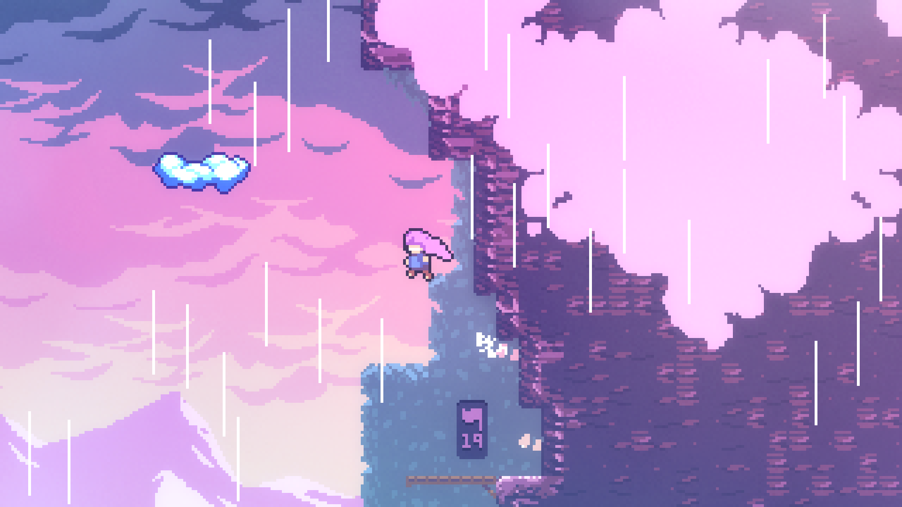
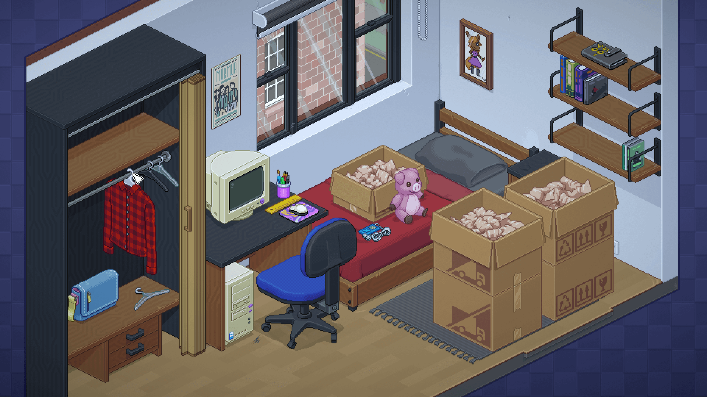
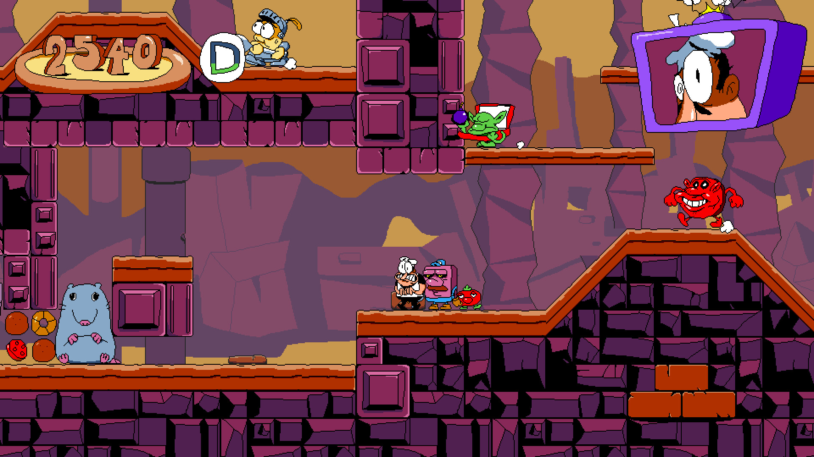
Note that with the above images, you can hover over them to see what they are! This will be used throughout the tutorial for clarity.
The program has a unique setup for getting it. Buying it usually costs $20, but they also allow you to download and compile the source code yourself. So what you're paying for is really just the convenience of it. Fortunately, being a company of coders, it's not too hard for us to just compile it. So it has been compiled and should be on every computer at the Hillsboro, OR center. To open it, just find the "Aseprite" program on your desktop. That should open to the following screen:
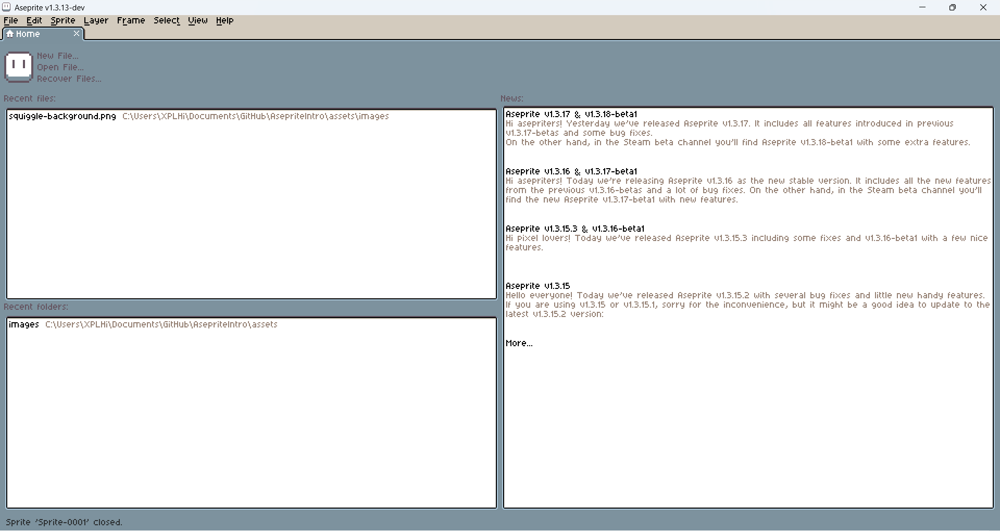
Any images you've worked on should appear in the "Recent files" section. But presumably you're looking to make a new one, and for that, you want to use the "New File" button:
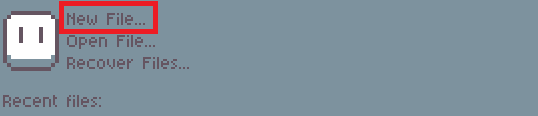
There are a few settings available here. The Size section contains the width and height of the image. This can always be changed later, but it's nice to start with a good size. For the example image we will be making, we will want an image size of 32x64. There are also options for color management and the background. We don't need to worry about these for now, so leave them at RGBA and Transparent.
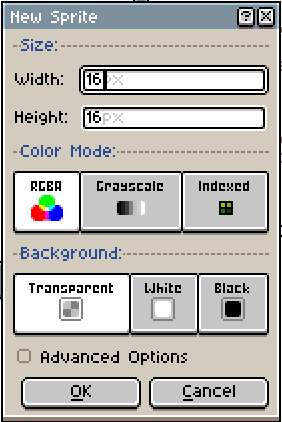
Press "OK" to start making the sprite!
Getting familiar with the editor
The editor will now enter the following view:
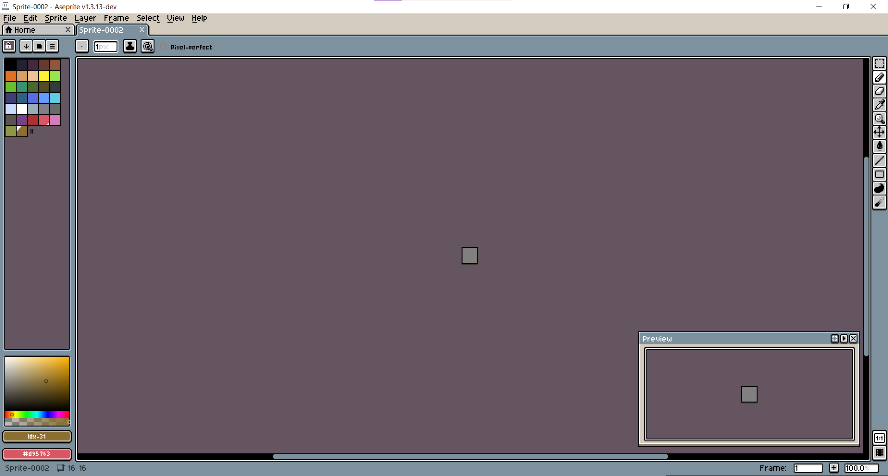
This should look somewhat familiar if you've used other image editors before, but it's very specifically designed for pixel art! The main area is the big center editor window. You can use the scroll wheel to zoom in and out here, and you can also hold the middle mouse button and drag to move around! Try using these to zoom in on the image area and center it.
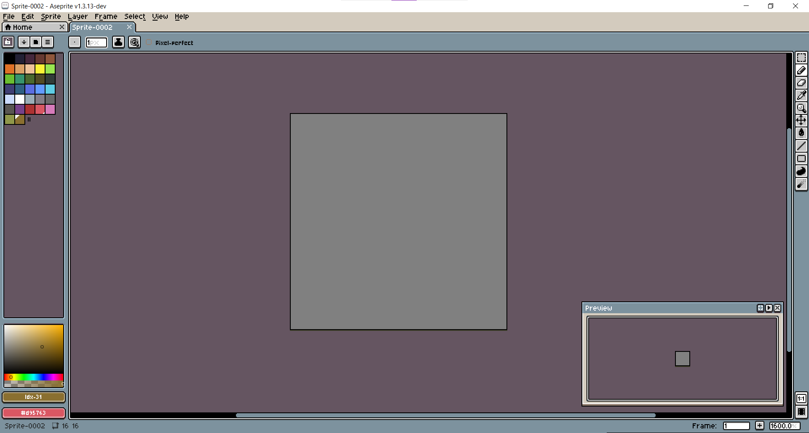
Another very important tool is on the left side of the screen, where there is a color palette. Clicking the lock button on the top can "unlock" the palette and let you edit it. If the image is in "indexed" mode, it can only use colors from this palette! Two buttons to the right of the lock button is the "Presets" button. This will show a bunch of palettes to select from, many of which are from retro consoles! On the right side is a column of tools. We will be using many of these over the course of this tutorial. Finally, there is a preview window on the bottom right. This allows you to look at what your sprite looks like zoomed out and even play animations on it while still keeping a single frame in the main view! Very useful!
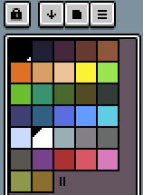
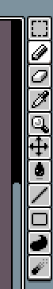
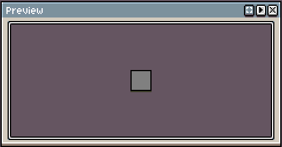
In addition, there is a menu bar on the top of the window with various options. You can save the sprite by either clicking on "File" and then clicking Save, or by using the Ctrl+S shortcut. Save the sprite now so it can be in a definitive spot! You can pick wherever you'd like.
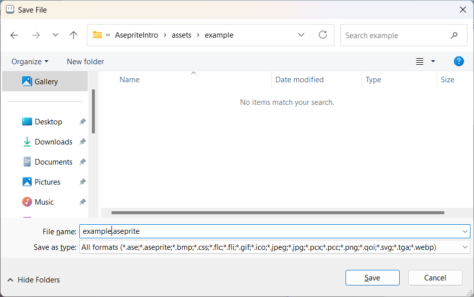
To start, we want to make a circle. Find the rectangle tool in the toolbar (it looks like a hollow rectangle with solid lines) and click it to see the various other tools that are available. What we want to use is the Ellipse Tool! Left-click a color you like in the palette and then click and drag in the image area to draw a circle. If you look in the bottom-left of the screen, you'll see a few numbers, including one that indicates the size of the circle you're drawing. We want the circle to be 16x16. You can hold shift to keep both dimensions equal to one another!
You should now have a circle on your screen, but it likely isn't centered. We can fix that fairly easily, though! If you hold the Ctrl key, you can click and drag on a section of an image to move it around. Move the circle so it's at the top of the image and centered! You can use the grey transparency grid in the background to help with this.
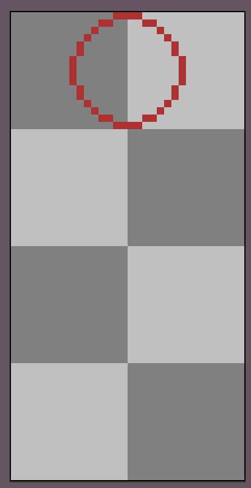
Currently, our circle is a bit hollow. Let's fill it! Look for the tool that looks like a drop. That is the paint bucket tool! You can use it to click inside the circle and fill it with a selected color. This finishes our basic setup for our animation.
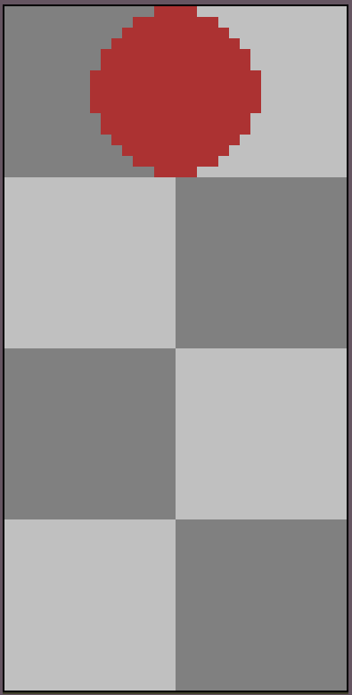
Animating!
To get started with animation, we first need to open the Timeline. This will be how we set up the frames of our animation. In the bottom right of the screen, there is a little "film reel" button. Hovering over it will show the text "Show Timeline." Click on it to open up the timeline! Feel free to re-center the image view as well.
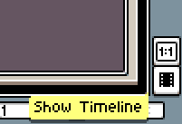
The timeline gives you access to two very important features: Layers and Frames. Layers may be familiar if you've used image editors like Photoshop, Krita, or Clip Studio Paint. They allow you to create separate, independent parts of an image that can be edited separately. Very useful for representing multiple objects, or putting details on top of an existing sprite without worrying about removing the details under it!
For animations, however, we want to focus on frames. Each frame is essentially a separate image, and if each image is shown quickly in sequence, it looks like the object is moving! To create a new frame, right-click on the small box that says "1" in the timeline and click "New Frame" to create a new one. This will copy the previous frame into the new one, allowing for easier animation!
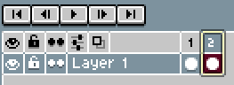
Now, we can start animating. Start by making sure to select the second frame, and then holding Ctrl and dragging the circle one pixel down.
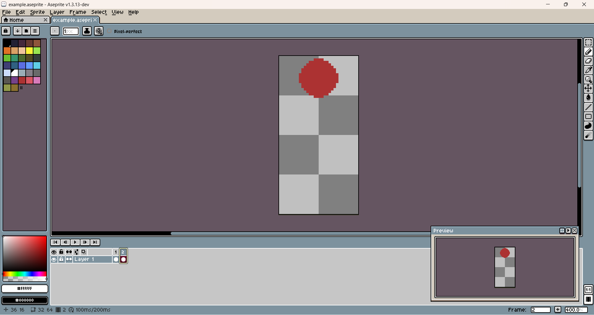
This can get confusing, though! We want to make sure we're properly moving things relative to the previous frame. That's where Onion Skinning comes in! Look for the button right over the layer name in the timeline area that appears like 2 squares overlapping one another. Clicking this enables onion skinning, meaning you can now see a slightly transparent copy of the previous frame behind the current one. Very useful! You can configure it using the button just to the left of the onion skin button.
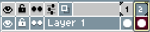
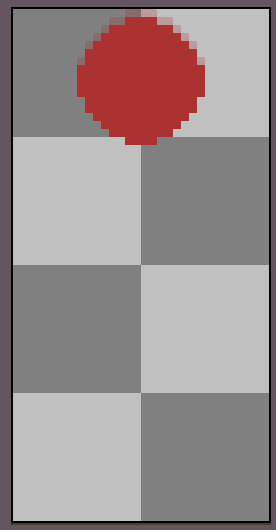
Let's keep making the circle fall! Create a new frame from the 2nd one, and move the circle a further 2 frames down. Repeat this two more times, bringing it an extra pixel down each time. This way, it looks like it's accelerating downwards!
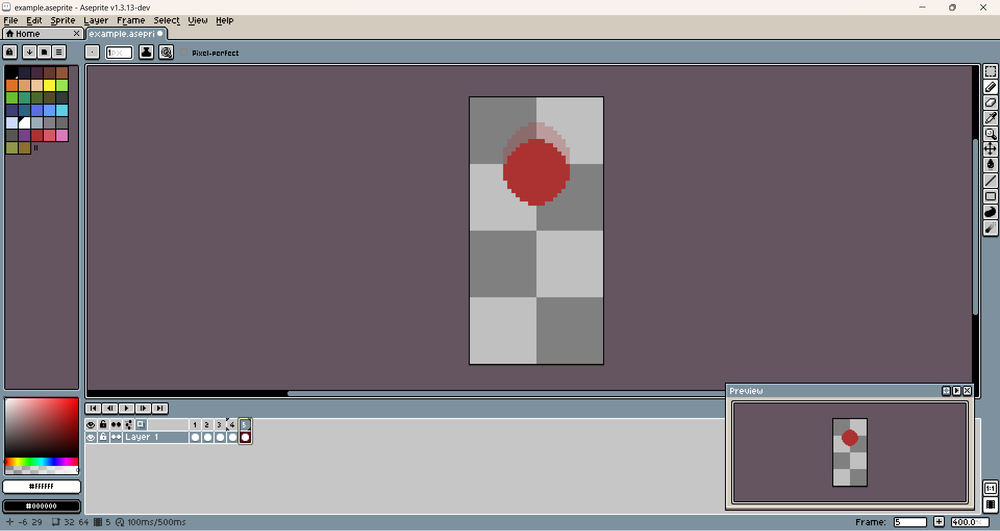
Now's a good time to start watching what the animation looks like! If you press the play button on the timeline, it should start showing your animation in motion! The onion skinning can make it look weird, so feel free to either turn that off or just look at the preview window in the bottom right. The animation should look something like the following:
Continue repeating making new frames and bringing them down until you reach the bottom of the screen. Keep in mind that you can use Alt+N to make a new frame. And it will show you how much you've moved the sprite in the bottom left next to the little triangle. Use that to keep track of how far the ball has fallen! On the last frame of the fall, don't worry about it not moving as many pixels as it technically should. Just make sure it ends on the bottom of the screen. It should be 11 frames long.
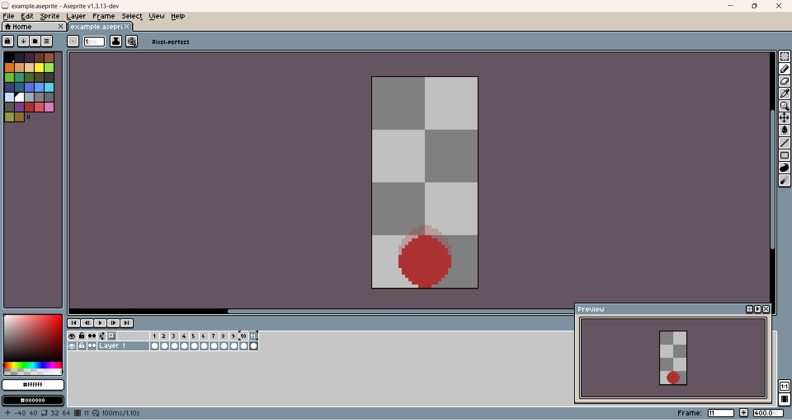
Going up!
Now, we can animate the ball going back up! The nice thing about this is that you can just reuse the frames from earlier! This gets into one of the quirks of Aseprite, which is that what happens when you click and drag depends on where you do it on an object. You can click and drag across the center of items to select multiple of them. Use this to select frames 2-10.
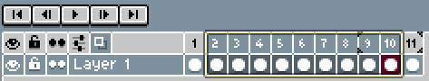
If you click and drag across the border of the selection, this will move things around. By holding Ctrl, you can duplicate the selected frames and move them to a new spot. Try that now by holding Ctrl, grabbing the border of the selection, and moving the cursor to the right so the little indicator appears to the right of frame 11. Let go to place these new frames to the side!
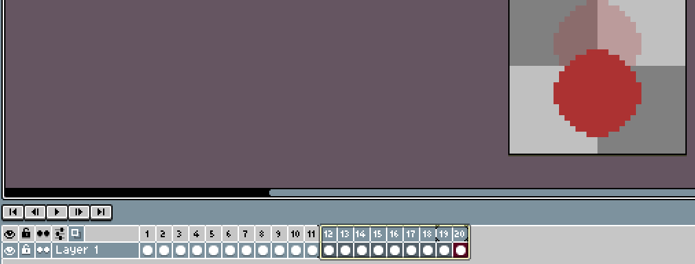
These frames are still in the order that we made earlier. Fortunately, Aseprite makes it very easy to reverse the order of frames! You can right-click on the frames and click "Reverse Frames," or just use Alt+I. Now, the frames will be in the opposite order! The animation will now show the ball falling down and rising back up.
It does seem to not be too dynamic with how it bounces, though. We can fix this with a bit of squash and stretch. Go to frame 11, where the ball is on the ground, and use the rectangular selection tool to select the ball. This should make a 16x16 selection area. Next, drag the top of the box a few pixels down to squish it down. That volume doesn't just disappear in reality, though, so to make it look a bit better, you also need to stretch it horizontally. Drag the left and right of the box an equal number of pixels out to keep it centered, but stretch the ball out. Now the ball squishes when it hits the ground, making it look much nicer!
The last thing to really make it look dynamic is to have it "bounce" back a little on the next frame. On frame 12, select the ball again. This time, stretch it vertically and squish it horizontally, so it looks like it gets wider on the ground and narrower as it bounces back up. This gives it just a little more interesting motion and force for the bounce!
Exporting
Having the animation is good, but how do we actually use it in a game? There are, for better or worse, many different ways to add the animation into your game depending on what engine you're using and what your needs are. Unity is able to import .aseprite files directly, so you can just put your aseprite project files in the Unity directory and it'll usually do what you want. For Godot, however, there are a couple ways to do it.
NOTE: Remember that Godot needs to be told to use "Nearest" sampling for pixel art. If you don't remember how to set this up, ask a Sensei!
Method 1: Plugin
This option can work to be able to quickly iterate, but takes some setup. The first step is to click on the "AssetLib" tab on the top of the editor. This will open the asset library where you can download free plugins and assets. If there is a button here to go online, press it.
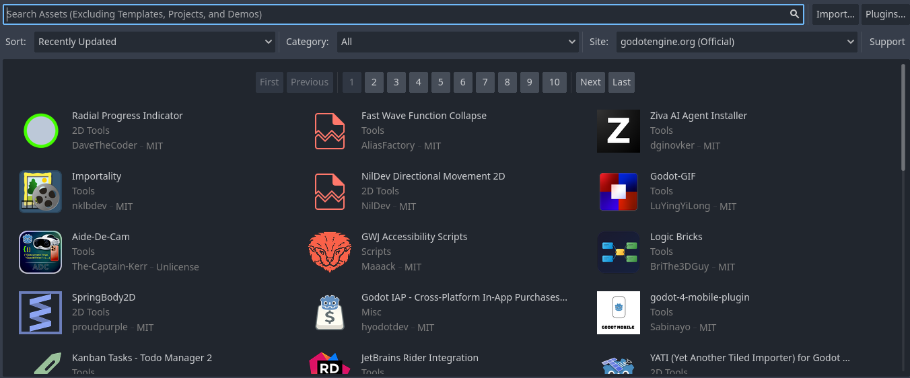
In the search bar, look up "Aseprite." The plugin I'm using here is called "Aseprite Wizard." Click on it and then click "Download" to download and install the plugin.
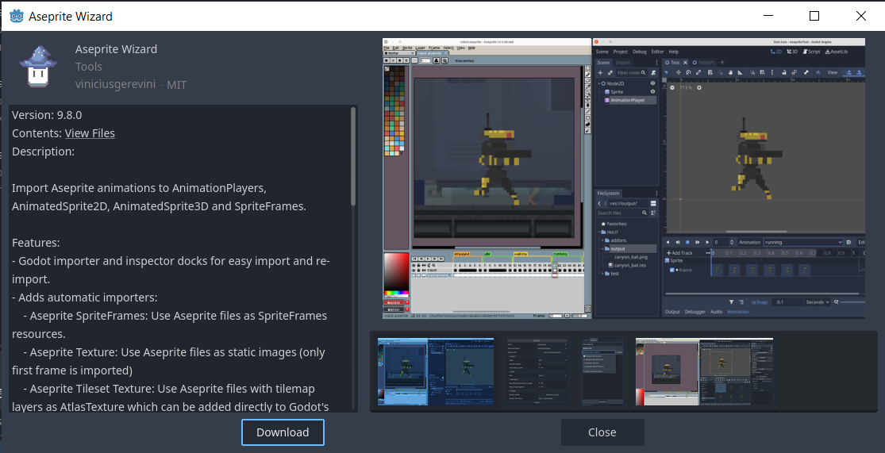
Once it's installed, click on "Project" in the top menu, and select "Project Settings." Switch to the "Plugins" tab and click the check mark to enable Aseprite Wizard.
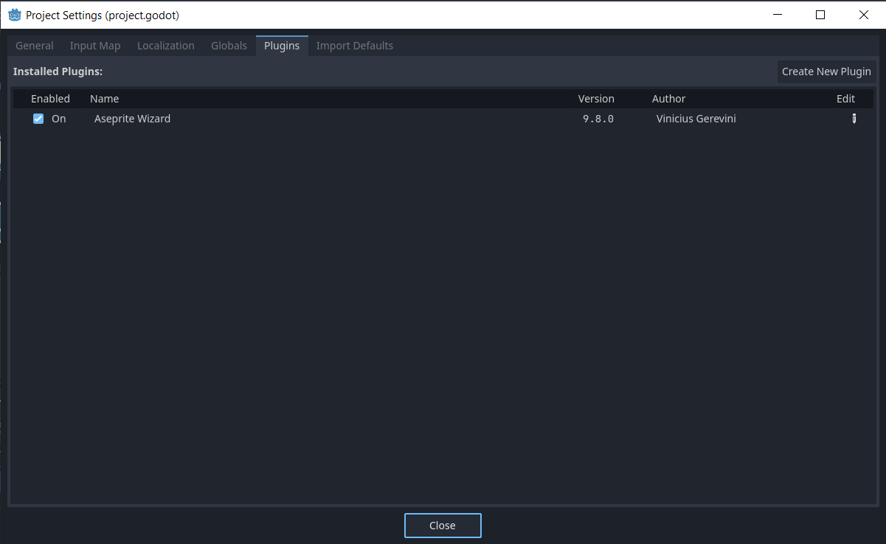
The final part of setting up is telling the plugin where Aseprite is. To do this, close out of the project settings. Click "Editor" in the top menu, and select "Editor Settings." Type Aseprite in the search bar. If it isn't already, set the "Command Path" setting to "C:\Aseprite\aseprite.exe" to point towards the correct program.
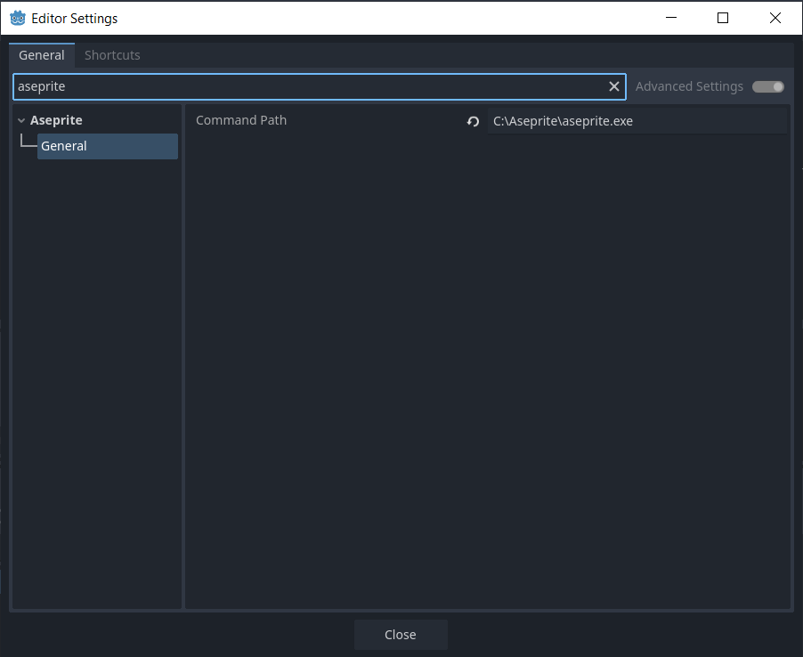
Now, .aseprite files should start appearing in the FileSystem menu! Clicking on them and selecting the "Import" tab further up will show import settings for the asset. You can use the "Import As" dropdown menu to select how you want to import the file. The easiest way is to use "Aseprite SpriteFrames," which can be put into an AnimatedSprite2D or 3D node. You can even set it to split layers out, meaning that you can animate separate layers for parts of your character and assemble the animated objects yourself later!
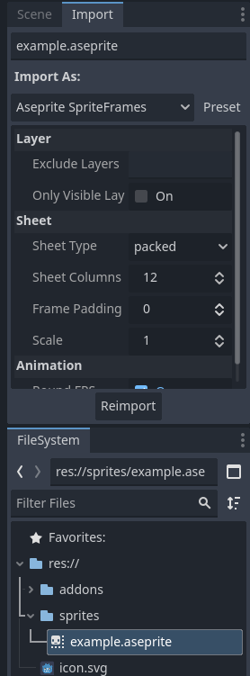
If you would like multiple separate animations, you can select multiple frames, right-click, and select "New Tag" to name that chunk of frames. The plugin will automatically detect this as a separate animation!
Method 2: Manual sprite sheets
The other way to import animations from Aseprite into an engine is by doing it manually. This is a bit slower, but gives you a lot more control over how the animation is handled. The first step in this is to actually export the animation from Aseprite. Click to "File" in the Aseprite top menu, move the mouse to "Export," and then click on "Export Sprite Sheet." This will pop up a menu with a few options.
Particularly notable are the options in "Layout" such as "Merge Duplicates," which will combine any frames which perfectly match into one image, saving storage space. You can enable this if you want. You can also control how it exports, with the default being one long row. It's recommended to modify the Constraints. I try to change it to "Fixed # of Columns" and find a number of columns that packs evenly and looks nice.
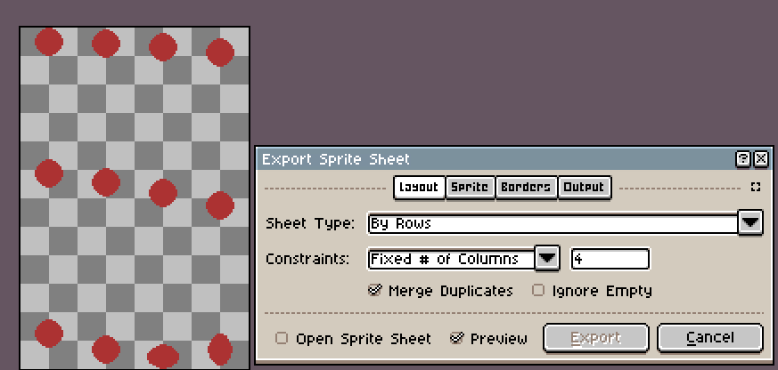
Switch to "Output" and check the "Output File" setting to save this as an image. Clicking on the file name will allow you to set where it's saved and what it's named. Once you're ready, click "Export" to export the image. It should now be visible in Godot. You can now create an AnimatedSprite2D to actually create the animation!
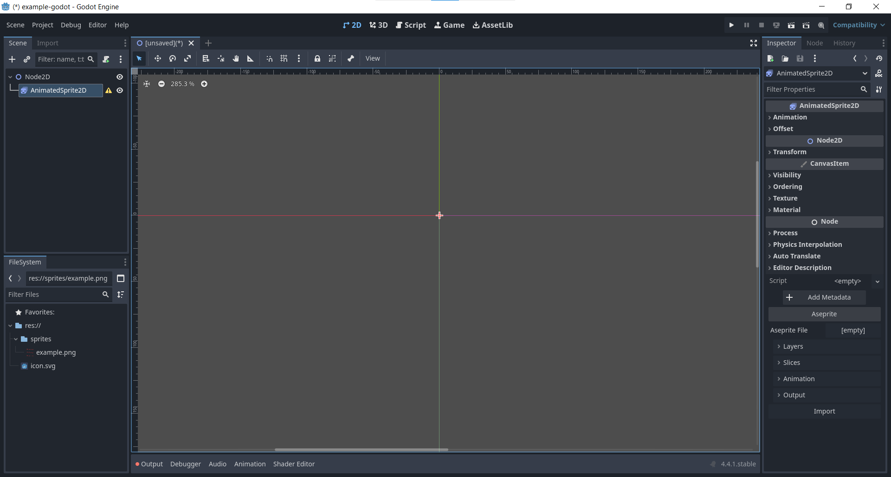
To set up animation frames for this sprite, click on the "Animation" category in its properties and then create a new asset for the Sprite Frames property. Clicking on this will show a sprite frames editor. You can create and rename animations here. There is also a button that looks like a grid that will import a sprite sheet. Click this one.
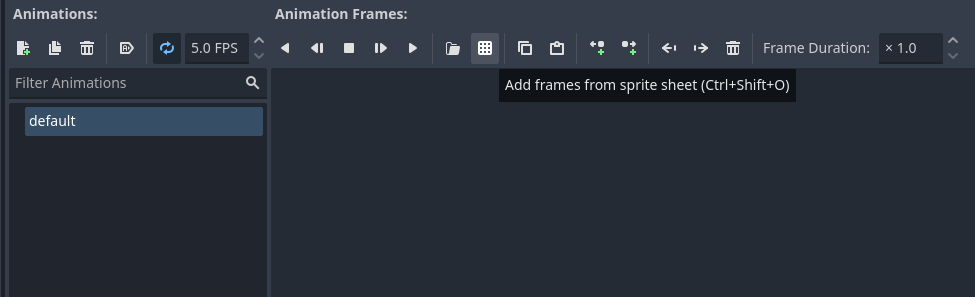
This will open a window to add frames. On the right side, you can click "Auto Slice" to automatically pick out animation frames. Alternatively, you can manually set the number of rows and columns to match your exported settings. In either case, once it's properly indicating each frame, you can select the frames. The "Select All" button in the top of the window should be able to properly select everything. If you only want certain frames, you can click on each one to add it. Make sure they're numbered correctly and then hit the Add button on the bottom.
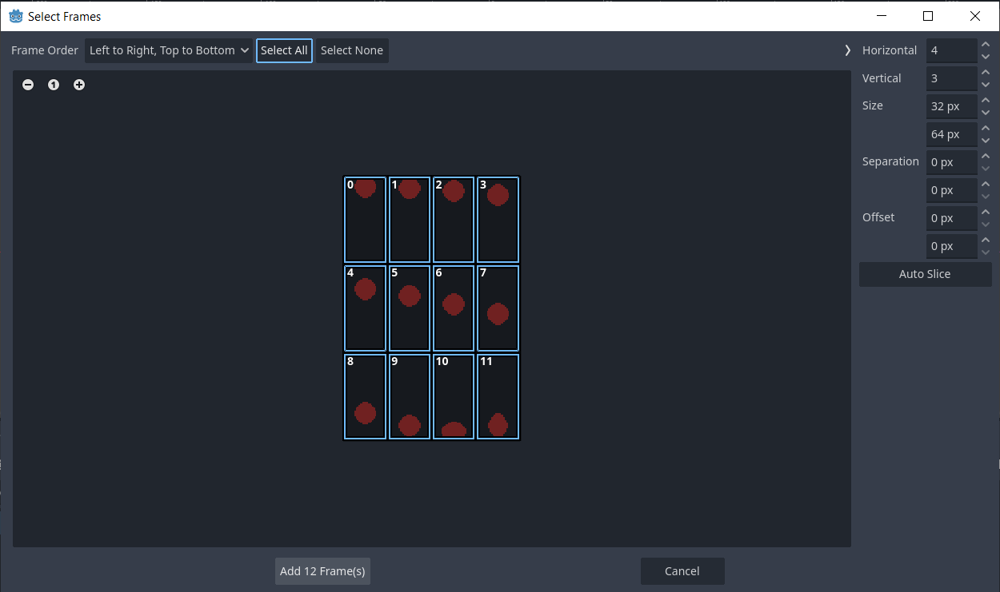
Make sure the animation is at a good speed using the "FPS" setting in the SpriteFrames menu. If you packed the frames, you'll now need to copy and paste the previous frames until it looks correct. You can either use the copy and paste buttons in the UI, or just use Ctrl+C and Ctrl+V. Once that's done, the animation should be complete and you should be able to use the play button to see the animation in your game!
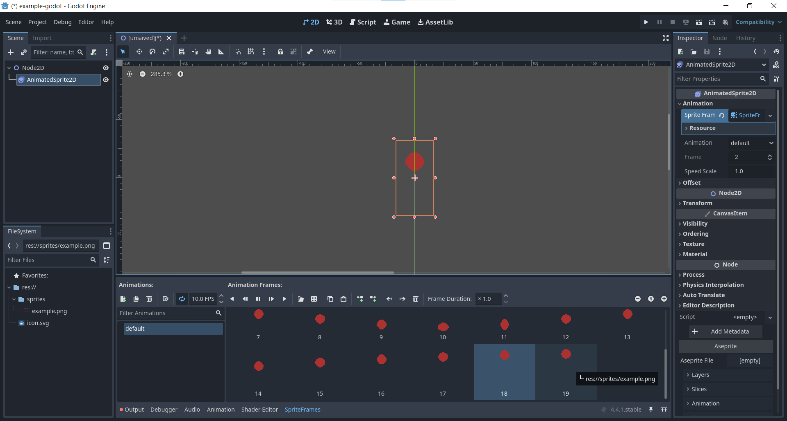